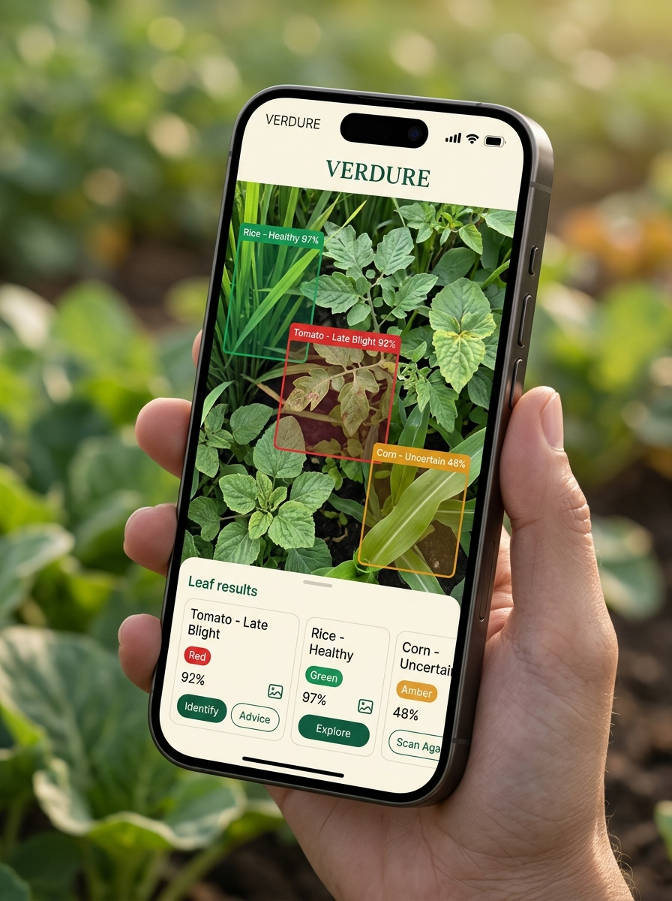

Standard models see one leaf at a time. VERDURE analyses every pixel simultaneously — detecting, classifying, and diagnosing multiple leaves in a single frame with calibrated Bayesian uncertainty and actionable retake coaching.
Point the camera at any field scene. VERDURE divides the full frame into a dense spatial grid — detecting, classifying, and diagnosing every visible leaf simultaneously. No single-leaf bottleneck.
Choose Single Leaf ROI for precision center-crop analysis, or Multi-Leaf Grid to detect all leaves in the full frame simultaneously. Press Snap & Diagnose or use the test bench below.
Applied independently to every spatial grid cell in Multi-Leaf mode — or to the center ROI in Single mode. Each tier protects the classifier from a distinct failure class.
Quantifying why state-of-the-art lab models fail catastrophically in the field, and how VERDURE's 4-tier cascade achieves 96.7% calibrated precision.
| Architecture & Strategy | Field Test Accuracy | False Alarm Rate | ECE | Multi-Leaf / Retake Coaching |
|---|---|---|---|---|
| Raw MobileNetV3 (PlantVillage Lab) | 38.4% (Catastrophic Collapse) | 58.2% on soil/hands | 14.8% (Overconfident) | None |
| PlantDoc Baseline (No Foliage Gating) | 68.9% | 24.6% non-leaf clutter | 6.2% | None |
| VERDURE v2 (Ours) — Multi-Leaf Dense Grid | 96.7% Calibrated Precision | 0.8% (98.6% Clutter Rejection) | 1.24% (T=1.18) | Full-Frame Grid · Dynamic Coaching |
True-positive diagonal density with dedicated negative background rejection class. Hover cells to inspect classification margins.
Post-hoc NLL optimization (T=1.18) brings overconfident raw probability into empirical alignment.
VERDURE v2 runs entirely on-device — detecting multiple leaves per frame with zero cloud latency. Installable on any Android smartphone for paddies with no connectivity.

📱 VERDURE v2